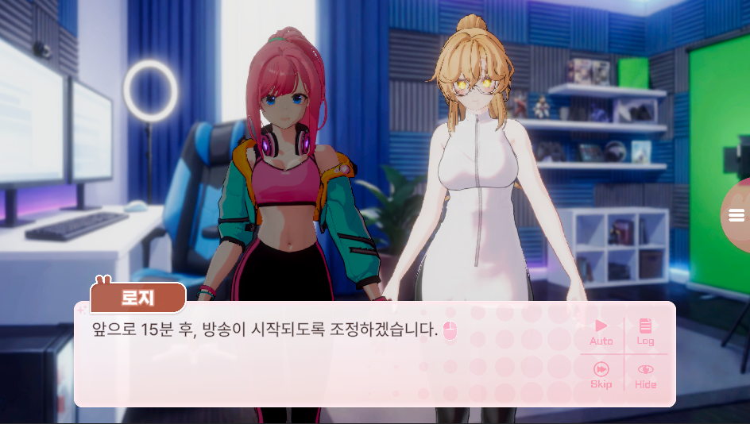
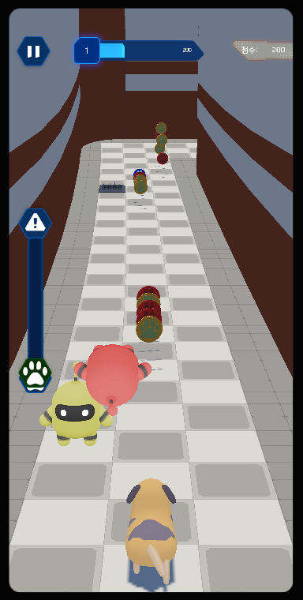
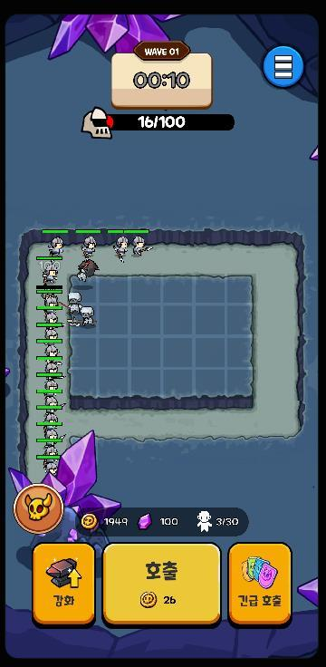
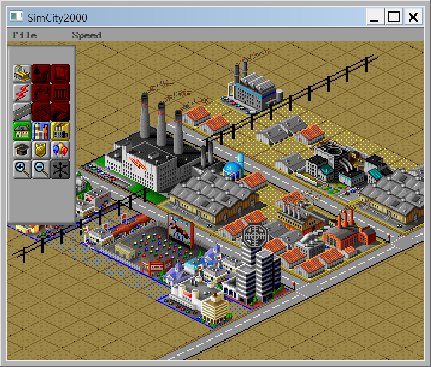
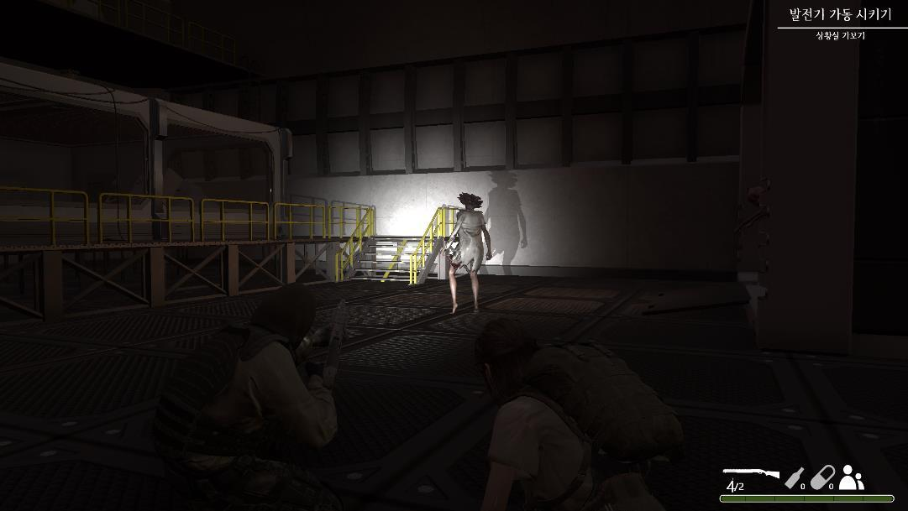

김희정
Unity 게임 클라이언트 개발자
1년간 Unity 클라이언트 개발자로 근무하며 XR, PC, 모바일 프로젝트를 경험했습니다. UI와 캐릭터 연출부터 데이터 처리, 통신 연동, URP 렌더링까지 클라이언트 개발 전반을 담당했습니다.
문제의 원리를 파고들어 원인을 찾고, 제한된 리소스는 기존 요소의 새로운 조합으로 해결합니다. 기능 구현을 넘어 더 나은 개발 방식까지 고민하는 개발자입니다.
기술
Unity · C# · UGUI · Animator · DOTween
데이터 기반 콘텐츠 · 저장/로드 · 캐릭터 연출 · URP · Shader · Editor Tool
게임 프로젝트

3D 캐릭터 기반 비주얼 노벨
- Unity
- C#
- URP
- Animator
캐릭터 연출과 데이터 기반 시나리오 시스템을 개발하고,
URP 렌더링 문제를 해결한 프로젝트입니다.
이 게임에서 해결한 문제
-
01 URP와 MaterialPropertyBlock을 결합한 캐릭터 오버레이
-
02 Frame Debugger로 진단한 lilToon 런타임 투명화 문제
-
03 기존 애니메이션에서 피크 포즈를 선택해 대기 연출 만들기
PROJECT ARCHIVE
이전 프로젝트
출시·협업 경험과 C++ 기반 구현 역량을 짧게 정리했습니다.

Unity · 3D 모바일 · 6인 팀
Animal Breakout
YouTubeFSM 기반 진행 상태와 ScriptableObject 스킬 시스템을 구현하고, JSON 저장·로드와 데이터 갱신 도구를 제작했습니다.
- Google Play 출시
- Unity
- C#

Unity · 2D 모바일 · 2인 팀
구해줘!! 마족마을
YouTube타워 배치·진화와 적 웨이브 시스템을 구현하고, 프리팹 제작 자동화와 밸런싱용 커스텀 인스펙터를 제작했습니다.
- 타워 디펜스
- Editor Tool
- UGUI


C++17 · Qt6 · Boost
SEED VAULT
컴포넌트 엔진 · 리플렉션 저장/로드 · 배치 도구